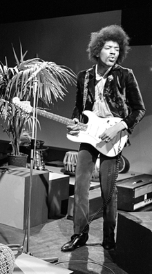

James Marshall Hendrix (né Johnny Allen Hendrix le 27 novembre 1942 à Seattle, aux États-Unis, et mort le 18 septembre 1970 à Londres, en Angleterre), mieux connu sous le nom de Jimi Hendrix, est un guitariste, auteur-compositeur et chanteur américain, fondateur du groupe anglo-américain The Jimi Hendrix Experience, actif de 1966 à 1970. Malgré une carrière internationale longue de seulement quatre ans, il est considéré comme le plus grand joueur de guitare électrique et un des musiciens les plus importants du xxe siècle.
